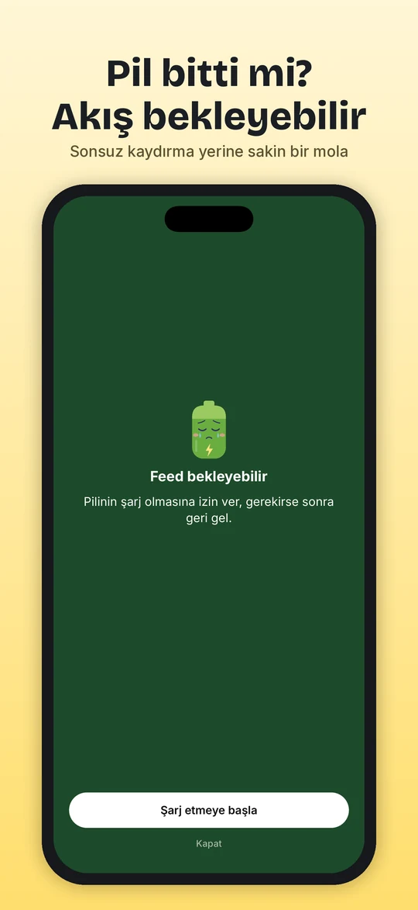

Telefon ve sosyal medya bağımlılığı: ne yapmalı?
Farkında olmadan telefona uzanıyor, akşamlarını akışta kaybediyor ya da telefon yanında değilken huzursuz mu oluyorsun? Bu bir irade zayıflığı değil; birçok uygulama seni olabildiğince uzun süre tutmak için tasarlanıyor. İyi haber şu: Gündelik düzeninde yapacağın küçük değişiklikler, suçluluk duygusundan çok daha fazla işe yarar.
Dikkat edilmesi gereken işaretler
- Sabah ilk, gece son baktığın şey telefon.
- “Bir dakikacık” sık sık bir saate dönüşüyor.
- Azaltmayı denedin ama kısa sürede eski haline döndün.
Neler yardımcı olur?
- Ne zaman ve nerede en çok kaydırdığını fark et.
- Önüne engel koy: Cazip uygulamaları ana ekrandan kaldır, gereksiz bildirimleri kapat.
- Seni içine çeken uygulamalara, iradeye güvenmek yerine sabit bir bütçe ver.
- Boşluğu ekran dışında sevdiğin bir şeyle doldur.
- Biriyle konuş. Telefon kullanımın uykunu, işini ya da ilişkilerini etkiliyorsa bir doktor ya da terapist yardımcı olabilir.
ScrollVolt sana nasıl destek olur?
ScrollVolt, seçtiğin uygulamalara ortak bir kaydırma pili verir. Pil kullandıkça azalır ve gün içinde kendiliğinden dolar: net bir sınır, ama tam bir yasak değil. Kilidi açmak için pili istediğin dakikaya kadar sürüklersin; pil sıfırlandığında uygulamanın yerine sakin bir ekran çıkar. Küçük pil arkadaşın Volty de işin nutuk değil, dostça bir dürtü olarak kalmasını sağlar. Amaç telefondan tamamen vazgeçmek değil, kontrolü yeniden eline almak.


Sık sorulan sorular
ScrollVolt bağımlılık için bir tedavi mi?
Hayır. Sınırlarına uymanı kolaylaştıran bir kendi kendine yardım aracıdır. Kontrolü kaybettiğini hissediyorsan lütfen bir uzmana danış.
Sosyal medyayı tamamen bırakmam mı gerekiyor?
Hayır. Hangi uygulamaların pili olacağına ve kaç dakikanın kilidini açacağına sen karar verirsin.
Verilerime ne oluyor?
Verilerin iPhone’unda kalır. ScrollVolt, Apple’ın Ekran Süresi altyapısını kullanır; hesap, takip ve reklam yoktur.
ScrollVolt’u iPhone’unda dene
ScrollVolt Premium, 3 günlük ücretsiz denemeyle başlayan yıllık bir aboneliktir ve Apple Hesabı ayarlarından dilediğin zaman iptal edebilirsin. Tek seferde ödemeyi mi tercih edersin? Ömür boyu kullanım için tek seferlik bir seçenek de var.
iPhone içinApp Store’dan indir